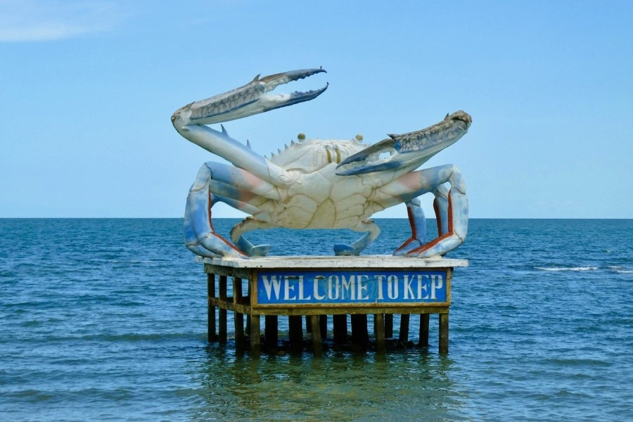

អំពីខេត្តកែប
ខេត្តកែប ជាខេត្តតូចមួយស្ថិតនៅភាគនិរតីនៃប្រទេសកម្ពុជា មានឆ្នេរសមុទ្រស្ងប់ស្ងាត់ និងទេសភាពធម្មជាតិដ៏ស្រស់ស្អាត។ ខេត្តនេះល្បីល្បាញដោយសារមឹកកែប និងអាហារសមុទ្រស្រស់ៗ។
ប្រវត្តិសង្ខេប
ខេត្តកែបធ្លាប់ជារមណីយដ្ឋានលំហែកាយដ៏ល្បីនៅសម័យអាណានិគមបារាំង។ បន្ទាប់ពីសង្គ្រាម ខេត្តនេះត្រូវបានអភិវឌ្ឍឡើងវិញ ជាតំបន់ទេសចរណ៍ស្ងប់ស្ងាត់សម្រាប់អ្នកចូលចិត្តធម្មជាតិ។
កន្លែងទេសចរណ៍សំខាន់ៗ
- ឆ្នេរកែប
- ផ្សារក្ដាមកែប
- កោះទន្សាយ
- ឧទ្យានជាតិកែប
- ភ្នំវាលស្រែ៥០០
ទីតាំងភូមិសាស្ត្រ
ខេត្តកែបស្ថិតនៅភាគនិរតីនៃកម្ពុជា ជាប់ខេត្តកំពត និងឈូងសមុទ្រថៃ។ ទីតាំងតូច ប៉ុន្តែមានសម្រស់ធម្មជាតិ និងឆ្នេរសមុទ្រស្រស់ស្អាត ដែលទាក់ទាញភ្ញៀវទេសចរជាច្រើន។